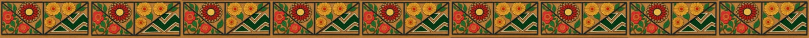
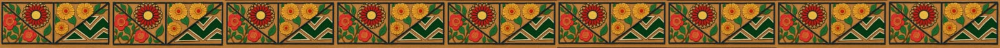

Esto solo es un diccionario, no traduce oraciones por el momento. Espera la próxima actualización.
Aplicación desarrollada por estudiantes del Colegio de Bachilleres del Estado de Oaxaca, "Plantel 31 Juquila" de la capacitacion de TIC'S. Este proyecto fue creado con el objetivo de preservar, fortalecer y difundir el conocimiento lingüístico de nuestra comunidad mediante el desarrollo de una herramienta digital accesible, práctica y moderna. La aplicación surge como parte de un proyecto académico enfocado en la investigación, documentación y traducción de palabras del español a las diferentes variantes del chatino, con la intención de promover el uso, la enseñanza y el valor cultural de esta lengua originaria. Participantes del proyecto: Diseño del logotipo y elementos visuales: Nataly Zarate Ramirez, Maria Fernanda Matias Salinas Encargado/a de crear el logotipo, colores, iconografía y apariencia general de la aplicación, manteniendo una identidad visual clara, cultural y entendible para todos los usuarios. Investigación y recopilación de datos lingüísticos: Estrella Maydelin Roman Santos, Yasmin Monserrat Garcia Reyes, Danna Ivonne Sanchez Sanchez, Floren Esmeralda Lopez Cruz, Cristian Axiel Feria Mendez, Scarlett Mayrhith Baltazar Lorenzo, Edvin Gerardo Arellanes Santiago, Edward Noel Cortes Lorenzo Encargado/a de consultar diversas fuentes, realizar comparaciones y validar palabras y significados para asegurar que las traducciones sean precisas y útiles. También participó en la estructuración del diccionario base utilizado en la app. Desarrollo y programación de la aplicación : Maria de los Angeles Pacheco Loaeza. Encargado/a de implementar la lógica funcional: motor de búsqueda, menú desplegable, interacción con botones, estructura en HTML, diseño en CSS y funciones principales en JavaScript. Transcripción y organización del diccionario: William Marioni Reyes Salinas y Juan Jose Zarate Mendoza Responsables de transcribir y organizar más de 2,000 palabras utilizadas en el Tradicionero, incluyendo diversas categorías como numeros, colores, animales, etc. Diseño gráfico: Jesus Angel Cartas Morales, Daniel Diaz Lopez, Angel Dariel Zarate Reyes y Luis Jesus Garcia Ventura. Encargados de crear los elementos visuales utilizados en la interfaz:Ícono del menú (hamburguesa / lista), Ícono de compartir e Ícono del logo pequeño de cabecera. Redacción, corrección y estructura del contenido textual: Maria de los Angeles Pacheco Loaeza. Encargado/a de revisar que la información, instrucciones y explicaciones dentro de la app sean claras, correctas y accesibles para los usuarios. Pruebas de funcionamiento y corrección de errores: Maria de los Angeles Pacheco Loaeza. Encargado/a de evaluar la aplicación en diferentes dispositivos, corregir errores, optimizar tiempos de respuesta y mejorar la experiencia del usuario. Apoyo académico, diseño y documentación: ING. Bibiana Canseco Mata, Dania Jamileth Lopez Chavez y Victor Joel Vasquez Sanchez. Encargados de supervisar el proyecto, revisar avances, organizar la documentación teórica y colaborar en la presentación final del trabajo.
Bienvenido/a a la aplicación Tradicionero / Triccionario. Aquí encontrarás la guía completa para utilizar todas las funciones. ¿Cómo buscar una palabra? 1. Escribe la palabra en español en el cuadro de texto. 2. Selecciona el idioma o variante triqui. 3. Presiona el botón "Traducir". Si la palabra existe en el diccionario, la traducción aparecerá automáticamente. Importante sobre cómo escribir números o palabras compuestas Algunas palabras deben escribirse exactamente igual a como están registradas en el diccionario. Ejemplo: Para traducir “99”, NO funcionará si escribes: Noventa y nueve Debes escribirlo como: Noventa_y_nueve Esto mismo aplica para cualquier palabra que requiera guiones, separaciones o formas específicas. ¿Qué hacer si no aparece la traducción? La app mostrará el mensaje: “No se encontró la traducción 😔” Esto puede deberse a: La palabra no existe aún en el diccionario. Está mal escrita o sin guiones. Compartir la aplicación Desde el botón “Compartir”, podrás enviar un enlace de la app a cualquier persona por WhatsApp, Messenger, Facebook, etc. Problemas comunes No aparece nada al traducir: revisa la ortografía. No funciona el menú: cierra la app y vuelve a abrirla. Se “atoró” el cuadro de texto: borra todo y vuelve a escribir. Si persiste algún problema, puedes actualizar o reinstalar la aplicación.
Si deseas apoyar el desarrollo de esta aplicación y contribuir a que continúe creciendo con nuevas palabras, más funciones y futuras actualizaciones, puedes realizar una pequeña donación. Tu apoyo ayuda directamente a: Extender el diccionario. Mejorar la aplicación. Mantenerla activa y accesible para la comunidad. Ayudar a que hayan nuevas actualizaciones. Y motivar al programador :v ¡Gracias por apoyar este proyecto educativo y cultural!